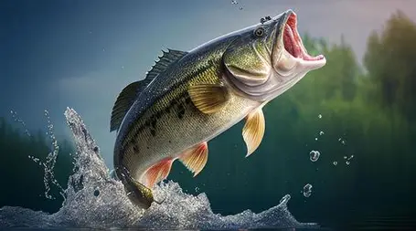

Michael Pink
Saginaw valley state Undergradute
I am from Carsonville Michigan which is located in Sanilac county in the thumb of Michigan. I am attending Saginaw Valley State Univeristy and I am currently a junior there. I like to do things like fishing, playing video games, and working on cars. I have an immense amount of passion for the things that I do and I make sure everyhting is always my best. I am also a very big animal person and have many differnt animals ay my house.

I do not have any projects that I have worked on but I do have one that I have wanted to start for a while. That is an app or webiste that will help fisherman know where to fish in any body of water and what baits to use while fishing in the body of water. I wanted to do this by having calculating things like barometric pressure, depth,water color,time of year, and target fish.
I do not have much experince in the computer science industry as I am still an undergradute at Saginaw Valley but I have been working since I was 15 and have plenty of work experince. I worked at Jellystone campgrounds for two summers. I then worked at wlamart for a summer and I spent all of last school year working at the diocese of Saginaw.
I have a highschool diploma from Deckerville community schools. I am an undergradute at Saginaw Valley State Univeristy with a major in computer science and a minor in cybersecurity. I am currently going into my junior year in univerity.
I do not currently have any blogs that I produce but I do like to watch a lot of fishing blogs I have linked one below. This is a blog by the channel KickingThierBassTv he goes out and does differnt fishing challnges and adventures. Another blog type of thing that i liked was River Monsters While this was a tv show its technically a blog because you follow Jeremy Wade and he does things in his day to day life.